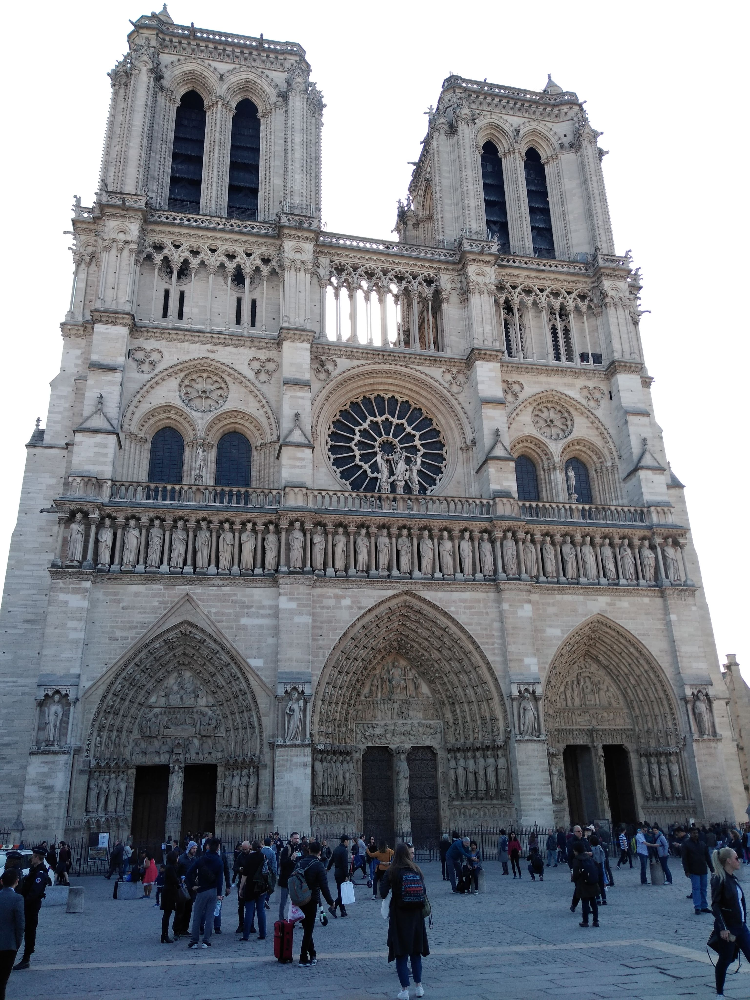
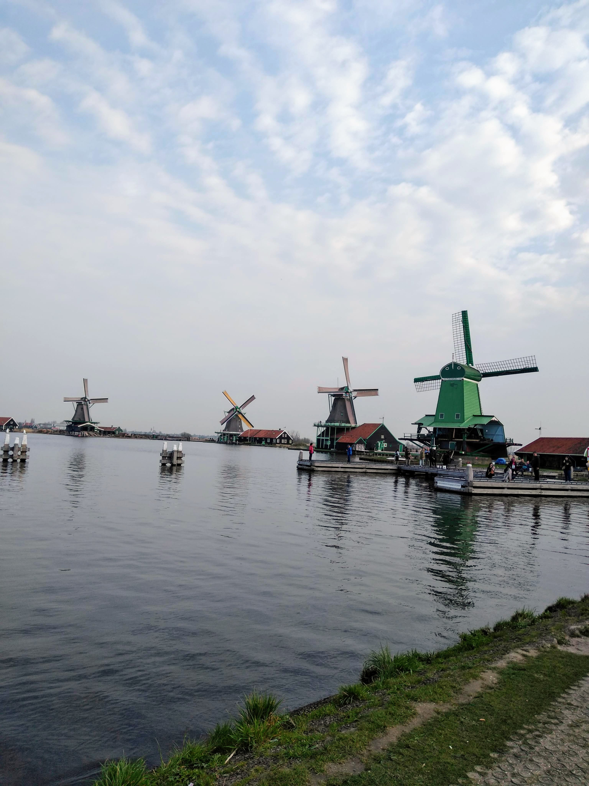
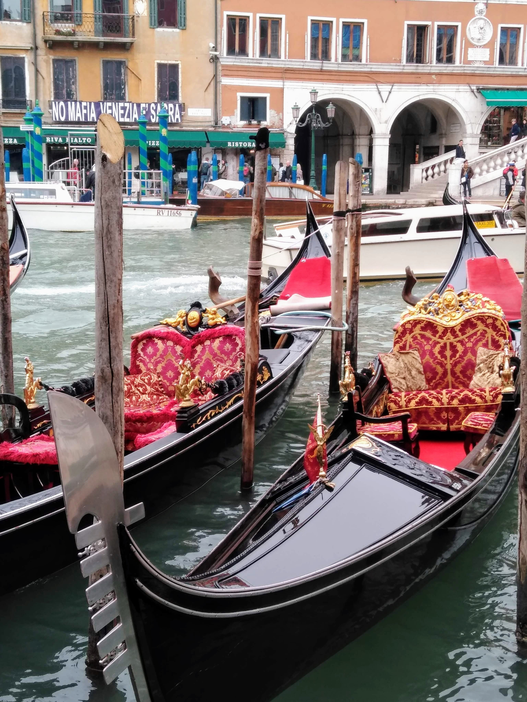
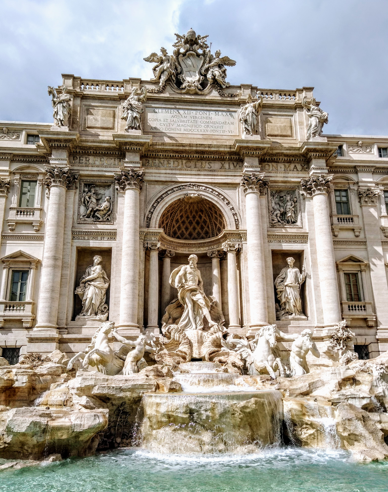
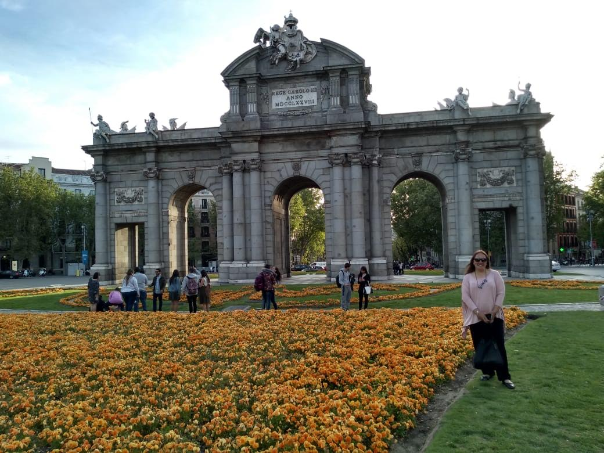

Nuestro Inolvidable Viaje a Europa: Cuatro amigas en Aventura
¡Europa, tierra de historia, cultura y aventuras sin fin! Cuatro amigas, Haydee, Liliana, Patricia y Graciela, decidimos dar un gran salto en sus vidas y embarcarse en su primer viaje juntas al viejo continente. Con corazones llenos de emoción y maletas repletas de expectativas, iniciaron una experiencia que nunca olvidarán. Cuatro amigas que compartían risas, secretos y sueños finalmente estaban a punto de convertir esos sueños en realidad. Empacamos nuestras maletas llenas de emoción y entusiasmo, listas para embarcarnos en una aventura que cambiaría nuestras vidas. Nuestro primer viaje a Europa estaba a punto de comenzar.
¡Llegamos a Londres!

La emoción en el aire era palpable cuando el avión comenzó su descenso hacia el Aeropuerto Heathrow de Londres. Dentro de la cabina, cuatro amigas nerviosas intercambiaban miradas llenas de anticipación. Estábamos a punto de vivir un capítulo emocionante de nuestras vidas: nuestro primer viaje a Europa. Londres era nuestro punto de partida.
Nuestro primer destino fue el Big Ben, un ícono de Londres que se alzaba majestuosamente sobre el Támesis. Tomamos fotos innumerables y disfrutamos del sonido de las campanas. Los siguientes días los dedicamos a explorar otros lugares emblemáticos, como el Palacio de Buckingham, el Museo Británico y la Abadía de Westminster. Al mirar hacia atrás en esos primeros días en Londres, nos dimos cuenta de que habíamos comenzado nuestro viaje europeo con el pie derecho. A medida que abordamos el tren hacia nuestro próximo destino, París, sabíamos que Londres siempre ocuparía un lugar especial en nuestros corazones como el punto de partida de esta experiencia inolvidable.
Paris!!... la Ciudad del Amor...
La emoción no podía ser contenida. Desde nuestra llegada, quedamos asombradas por la belleza de la Torre Eiffel, iluminada majestuosamente en la noche. Paseamos por el Sena, degustamos croissants y café en las cafeterías parisinas y nos perdimos en el encanto de Montmartre.
Pasamos días explorando los icónicos museos de París, visitamos el Museo del Louvre, donde nos maravillamos con la Mona Lisa y otras obras maestras. También hicimos un paseo en barco por el Sena, disfrutando de las vistas panorámicas de la ciudad y sus monumentos. Paseamos por los Campos Elíseos, el Arco del Triunfo, La Plaza de la Concordia, Notre Dame y el maravilloso Versailles. Terminamos nuestra visita asistiendo al espectáculo del Molino Rojo, lleno de luces y entretenidos bailes… y un brindis de despedida con un rico espumante!!
De París a Ámsterdam
Abordamos nuestro autobús hacia Ámsterdam, donde los canales y la arquitectura histórica nos dejaron sin aliento. Paseamos en bicicleta por la ciudad, visitamos el Museo Van Gogh y exploramos el Mercado de las Flores flotante. Por la noche, nos aventuramos en la vida nocturna de la ciudad y disfrutamos de la animada escena de los bares.
Nuestra próxima parada fue Brujas, una ciudad de cuento de hadas en Bélgica. Los canales, los edificios medievales y el chocolate belga nos hicieron sentir como si estuviéramos dentro de un cuento de hadas. Probamos cervezas belgas y disfrutamos de los famosos gofres.
Venecia, la Ciudad de los Canales
Nos dirigimos a Venecia, la ciudad que parece flotar en el agua. Pasear en góndola por los estrechos canales fue una experiencia única. Nos perdimos en las calles sinuosas de Venecia, admirando la arquitectura y disfrutando de la comida italiana frente a la Piazza San Marco.
En Venecia, visitamos la famosa Basílica de San Marcos y el Palacio Ducal. Además, exploramos las islas cercanas de Murano y Burano, famosas por su vidrio soplado y encajes coloridos. Cada rincón de Venecia era una obra de arte.
En el Corazón de Italia - Florencia y Roma
Luego de Venecia nos sumergimos en la riqueza cultural de Florencia. Visitamos la Galería Uffizi, nos perdimos en las calles adoquinadas y disfrutamos de la deliciosa comida toscana.
Roma, la Ciudad Eterna. Allí, nos quedamos boquiabiertas ante el majestuoso Coliseo y el Foro Romano, testigos de la grandeza del Imperio Romano. Probamos auténtica pasta italiana y nos deleitamos con helados deliciosos.
Visitamos el Vaticano, donde quedamos impresionadas por la belleza de la Basílica de San Pedro y el arte en la Capilla Sixtina. Además, lanzamos monedas en la Fontana di Trevi, haciendo un deseo de regresar a esta maravillosa ciudad.
Barcelona, una Ciudad para Enamorarse
Después de explorar con asombro Londres, París, Ámsterdam, Venecia, Florencia y Roma, nuestra aventura europea llegaba a su emocionante conclusión en la soleada y vibrante Madrid. Pero antes de llegar a la capital española, decidimos hacer una parada final en Barcelona, la ciudad de Gaudí, playas doradas y una cultura única.
Al aterrizar en el aeropuerto de Barcelona, sentimos una familiaridad reconfortante en el aire. Aunque era la primera vez que visitábamos esta ciudad, la energía amigable y el ambiente relajado nos hicieron sentir como en casa de inmediato.
En Barcelona, nos enamoramos de la arquitectura de Antoni Gaudí. Visitamos la Sagrada Familia, donde quedamos sin palabras ante su belleza y detalles arquitectónicos únicos. Parque Güell nos llevó a un mundo de fantasía con sus mosaicos de colores y esculturas extravagantes. Paseamos por Las Ramblas, disfrutando de las tiendas, los mercados y la animada vida callejera.
Una Despedida de Ensueño: Madrid, el Cierre de Nuestro Viaje Épico por Europa
Con un nudo en la garganta y una maleta llena de recuerdos inolvidables, llegamos a Madrid, la última parada de nuestro emocionante viaje por Europa. Nuestra aventura había sido un torbellino de emociones, risas y descubrimientos, y estábamos decididas a hacer que nuestros últimos días fueran tan memorables como los primeros.
La Bienvenida a Madrid
Madrid es una ciudad rica en cultura y arte, y pasamos nuestro segundo día explorando sus museos de renombre. El Museo del Prado nos dejó maravilladas con obras maestras de artistas como Velázquez y Goya. Luego, visitamos el Museo Reina Sofía, donde quedamos fascinadas por las obras de Picasso y Dalí. La tarde la dedicamos a pasear por el hermoso Parque del Retiro, donde alquilamos una barca en el estanque y disfrutamos del ambiente relajado.
No podíamos dejar de explorar la Gran Vía, la calle principal de Madrid llena de tiendas, teatros y vida nocturna. Hicimos algunas compras y disfrutamos de la deliciosa gastronomía española en un restaurante local. No podíamos resistirnos a las tapas y al auténtico jamón ibérico.
Nuestra visita a Madrid no habría estado completa sin explorar el Palacio Real. Quedamos asombradas por su majestuosidad y la opulencia de sus salones y jardines. Después, nos dirigimos a la Plaza Mayor, donde probamos los churros con chocolate en una tradicional chocolatería.
Regreso a Casa
Madrid se convirtió en el epílogo perfecto para nuestro viaje por Europa. La ciudad nos brindó una cálida despedida y una última oportunidad para sumergirnos en la cultura española.
Tras más de veinte días de aventuras inolvidables en Europa, era hora de regresar a casa. Nos despedimos de este hermoso continente con una mezcla de alegría y melancolía, sabiendo que habíamos vivido una experiencia que cambiaría nuestras vidas para siempre.
Nuestro primer viaje a Europa como amigas fue una aventura llena de descubrimientos culturales, paisajes impresionantes y momentos compartidos que fortalecieron nuestra amistad, llevábamos con nosotros no solo maletas llenas de recuerdos, sino también corazones llenos de gratitud y alegría por la increíble aventura que habíamos vivido juntas en Europa.
A medida que volvemos a nuestras vidas cotidianas, llevamos con nosotros recuerdos que atesoraremos para siempre. Europa nos dio un regalo inolvidable, y estamos ansiosas por volver a explorar más de este maravilloso continente en el futuro. ¡Hasta la próxima, Europa!
Mientras abordábamos nuestro vuelo de regreso a casa, llevábamos con nosotros no solo maletas llenas de recuerdos, sino también corazones llenos de gratitud y alegría por la increíble aventura que habíamos vivido juntas en Europa. Nuestro viaje había llegado a su fin, pero las memorias y la amistad que habíamos construido perdurarían para siempre. ¡Hasta pronto, Europa!